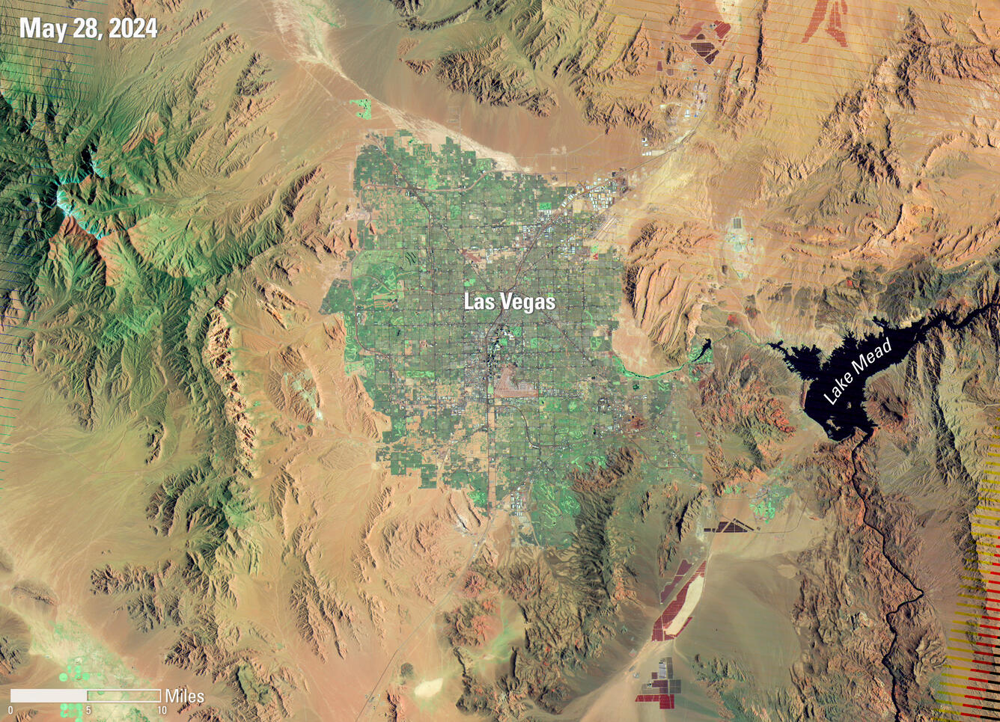
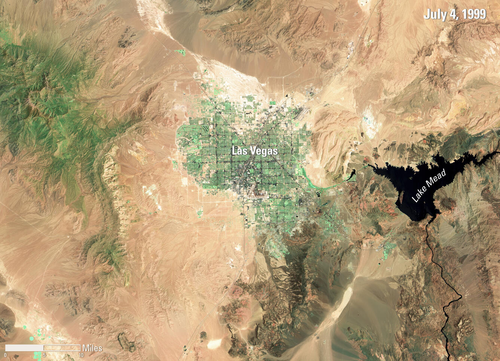

01 / 城市与自然资源
地物提取与变化检测
识别建筑、水体与植被，找出多期影像中的变化区域。
输出结果地物轮廓 · 分类结果 · 变化区域
查看识别案例01 / 行业解决方案
从遥感调查到现场巡检，提取需要关注的目标与区域，交付可复核的识别结果。
02 / DELIVERY
按项目目标约定交付范围，从样本验证推进到实际使用。
提供目标位置、变化区域或缺陷标注，方便业务人员核查。
用实际样本验证和优化模型，按约定指标评估识别效果。
根据现有系统与运行环境，提供接口和部署方案。
03 / CASES
选择算法分类，再从二级目录查看具体算法的用途、输入与输出。
地物提取 / 分类概览
从卫星与航空影像中提取地物边界、类别和空间分布。
土地覆盖分类图本分类公开参考
彩色栅格区分水体、植被和建成区。
检测与追踪 / 分类概览
识别重点目标，结合序列影像开展定位与持续追踪。
道路车辆多目标追踪本分类公开参考
检测框与轨迹显示同一辆车在连续画面中的位置。
时空变化 / 分类概览
对比多期影像，发现区域变化并形成专题分析结果。


拉斯维加斯 25 年变化本分类公开参考
拖动分界线，对比两个年份的 Landsat 7 影像，观察城市扩张与米德湖水域变化。
影像增强 / 分类概览
改善影像质量与可用性，为识别和分析提供数据基础。
卫星影像全色锐化本分类公开参考
左侧为自然色合成，右侧为同一地区经全色锐化后的细节。
农林生态 / 分类概览
面向农业生产、森林调查和环境治理，识别作物、生态要素与异常情况。
作物种植分布制图本分类公开参考
遥感分类结果按颜色标出玉米、大豆、小麦等作物类型与空间分布。
安全与质检 / 分类概览
结合巡检与工业图像，识别设施隐患、作业风险和表面缺陷。
道路裂缝分割本分类公开参考
白色掩膜显示模型提取的裂缝轮廓。点击图片可查看论文完整对照图。
04 / DEMONSTRATIONS
观看追踪、抠图与三维识别在连续画面中的输出。
当前片段未能播放。打开视频文件 ↗
在道路视频中关联目标标识，展示车辆运动与轨迹。
开源演示片段10 部
05 / COLLABORATION
从一个业务问题和一批样本开始。先确认要识别什么、如何验收，再确定研发与部署范围。
结合样本数据、业务目标和运行环境，确定验证范围。
针对场景研发和优化模型，按约定指标验证效果。
根据项目提供模型、接口与部署方案。